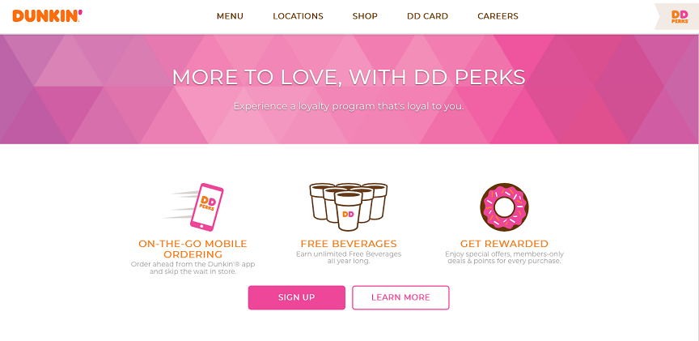
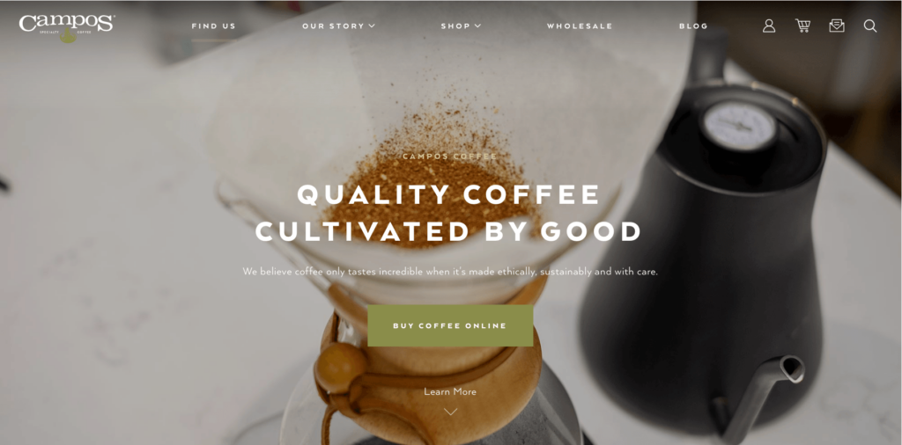

Beautiful Websites: 6 Tips for Attractive Website Design
(Last Update On: April, 3 2023)
Did you know that 48 percent of people say that a website’s design is the number one determining factor for the credibility of a business? Your audience’s first impression comes from your website’s design. Beautiful websites are crucial for making an impactful and positive first impression for your audience.
On this page, we’ll provide you with six tips for creating beautiful websites. Keep reading to learn more about how to create a visually appealing and functional website for your audience.
1. Only add necessary elements that add value to your site
When you’re designing your site, it’s easy to get caught up in adding too many elements to your pages. You want your site to be visually appealing, so you continually add elements to add another dimension of visual interest to your page. This can lead to your site getting cluttered or overwhelming.
The other issue is that, if certain elements don’t have a purpose on your site, it can leave your audience confused. Every element on your site should have a purpose. Imagine putting a call-to-action (CTA) button that doesn’t lead to a new page.
People would constantly try to click on the button, and it would leave them confused as to why it doesn’t take them somewhere. Or, think what would happen if an HVAC website design prompted users to “Call now” on a top-of-the-funnel blog post. People probably wouldn’t click.
That CTA would also come off as pushy and impact a reader’s impression of the company. Every element on your page needs a purpose. Don’t put something on your site solely because it adds to the aesthetic of your page.
Create elements that are functional and enhance the user experience on your site.
Example: Zillow’s website design is a prime example of only including elements that add value to your site. With their site, they keep it simplistic and easy to navigate with clean headers.
2. Design for the user first
When you’re designing beautiful websites, you want to focus on designing for the user. Your audience will be engaging on your site and learning more about your business. It’s important that you build a site that works for them.
As you construct your awesome website design, think about how to create a design that provides your audience with the best experience. Look at elements like your design format, navigation, and visual elements. When you design for the user first, you create a better experience for them on your site.
Example: Again, we turn to Zillow’s website as a prime example of good design. Zillow’s website is a strong example of a user-friendly site. It’s very simplistic, but it focuses on helping people get to what they need to the most.
For example, Zillow’s homepage has three different sections for buying, selling, and renting a home.
3. Choose colors that align with your brand
Beautiful websites have colors that align with the business’s brand. When you design your site, you want to ensure that you choose the right colors. Your color choices impact how people perceive your brand.
Different colors have different meanings. It’s important that you understand what different colors mean and how they impact your audience’s perception of your business. If you already have colors for your brand, integrate them into your site.
For brand consistency, make sure you use the same core colors in all of your marketing materials. When you choose colors for your beautiful website, you’ll want to stick to three to four colors. You will have a main color, one to two accent colors, and a font color.
With every page you create, you’ll want to use these colors consistently in the same place. You’ll want to use colors consistently in the same place. Your CTA buttons should all be the same colors and titles should all be the same colors.
Example: Dunkin’ is a prime example of utilizing the same color scheme on its website. Dunkin has a distinct pink and orange color scheme that they use for their brand. They carry this color scheme on to their website.

4. Add visual elements to make your website beautiful
When users come to your site for the first time, they want to see elements that catch their attention. Beautiful websites have visuals that draw users in and get them to check out a business. They add balance to your page and help break up the text.
There are many types of visual elements you can use on your page, including photos, videos, and infographics. Many companies will use an abundance of photos and integrate videos intermittently as points of engagement. You can use any number of visual elements to help design your site.
When you integrate visual elements into your website, they should have meaning to your business. Don’t place images for the sake of adding images to your page. Your images should have meaning and be reflective of your business and industry.
You can include photos of your team, your office, your products, or people in action doing your services. You’ll want to use original images to give a more authentic experience on your site. If you use too many stock photos on your site, it will make your page seem stiff or fake.
By adding visual elements, you’ll make your site more visually appealing for your audience.
Example: Airbnb has an extremely visual site that gets users to engage on their page. Considering their focus is on getting people to stay at different Airbnb rentals, they focus on showing photos of different destinations and types of homes you can book for your trip. This gets people to engage with Airbnb’s site and look at all their options.
5. Choose the right font
Beautiful websites aren’t just focused on the right colors and visual elements. The text on your page places a big part in the beauty of your site, too. Not only does the content matter, but it also matters whether your audience can read the content.
Your typography will impact how your audience interacts on your site. If you have too many competing fonts or fonts that are difficult to read, it will cause your audience to have a negative experience on your site. They won’t be able to read your information and your pages will be difficult to browse.
Example: Zola’s website is an example of using font consistently on your page. If you look at this example excerpt from their site, you can see that they bold their headings, keep the rest of their text normal, and link their content with a light blue color (consistent with their logo colors).
6. Test your website
When you’re making beautiful websites, it’s important that you test your awesome website design. Your first design isn’t going to be your best design. You’ll need to test different elements on your site to see how they impact your audience and improve your site.
Testing elements on your site will allow you to see how changes can impact your audience’s experience on your site. You can see if they add to the user experience, do nothing, or make it worse. This gives you great insight as to how to make your site the best version possible.
When you A/B test elements on your site, you’ll want to test them one at a time. If you try to change too many elements, you won’t know how each individual change impacts your site. To get the clearest results, focus on testing individual parts of your website to see how the change impacts your site.
It doesn’t need to be big changes, either. Something as small as changing the color of a CTA button can have a huge impact on getting people to click on that button. You may make multiple small changes, but they’re big enough to impact your audience’s experience on your site.
Example: Campos could test numerous page elements to see how they impact site performance and business metrics. For example, they could test the color of their CTA button.

Post Categories
Other Blogs :

Visually Appealing Websites
Everyone seems to have made a website these days. The Web is getting more crowded by the day, with literally dozens of websites being added as you read this article. It is becoming harder and harder to get noticed among the masses.
Read More
Make a Beautiful Website
It might not seem like such a big deal, but the way your website looks matters a lot. In a recent study by Forrester Research, they found that a well designed interface can increase conversion rates on your website by 200%. Where do you start?
Read More
Leave a Comment